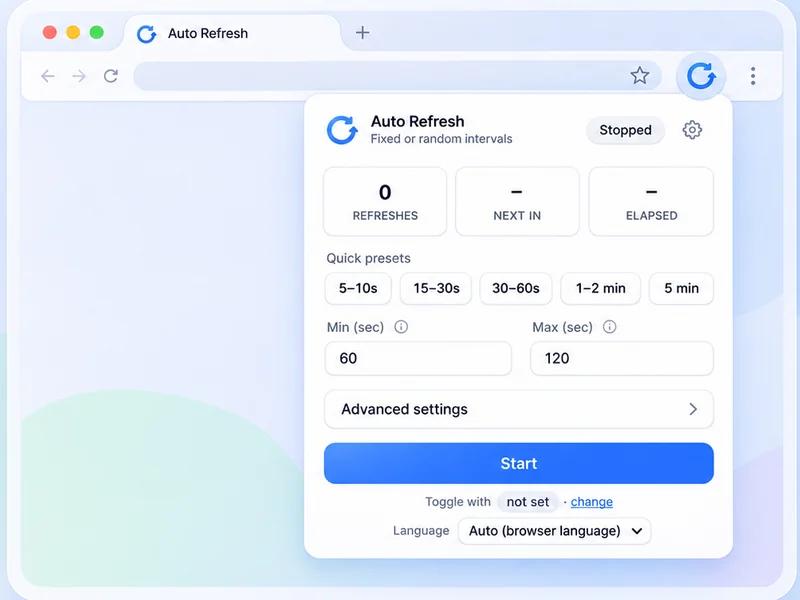
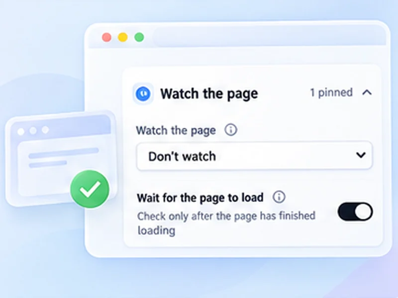

Auto refresh any tab. Know when the page changes.
Free Auto Refresh reloads a page on a fixed or random timer, stops when your text appears or the content changes, and waits while you type. No account, no ads, no tracking.

Not just a timer
An auto refresh extension that also watches the page, protects what you are typing and knows when to stop.
Auto refresh timer
Pick an interval, press Start, and the page reloads itself until you stop it.
See how it worksRandom intervals
Give a minimum and a maximum, and every refresh picks a new wait somewhere in between.
See how it worksPage change monitor
Tell it what to look for.
See how it worksLive countdown
A small pill sits in the corner of the page with the refresh count, the time left, and pause and stop buttons.
See how it worksPause while typing
A refresh that fires while you are typing wipes out your work.
See how it worksRestore scroll position
Reading halfway down a long page? Turn on Keep scroll position and each refresh brings you back to the same spot..
See how it worksHard refresh
A normal refresh can show saved copies of a page.
See how it worksRefresh limits
Set a time limit, a refresh limit, or both.
See how it worksSaved profiles
Different pages need different settings.
See how it worksThree steps, ten seconds.
No account or setup wizard. Open a tab, pick a rhythm, and get back to what you were doing.
Open the page
Go to the page you want to refresh and click the Free Auto Refresh icon in the toolbar.
Choose your rules
Pick a preset or set your own interval. Add a limit or a watch rule if you like.
Press Start
Pause or stop from the popup, the on-page counter, or with Alt+Shift+R.
What people use it for
From waiting on a product drop to watching a dashboard, let a tab check itself.
Restock alerts
Leave the product page open.
See the setupPrice changes
Point it at the price on the page.
See the setupTicket drops
Returned and resale tickets appear without warning.
See the setupAppointment availability
Cancellations free up slots at random times.
See the setupAuctions and launches
Not every auction page updates itself.
See the setupResults pages
Results day means hitting reload for hours.
See the setupStatus pages
Parcel, refund, visa or job application: when the status line changes, you will know without checking again and again..
See the setupDashboards
Reports and BI dashboards often show stale numbers until someone reloads.
See the setupBuilds and queues
Waiting on a deploy or a long job? Get a notification when the page says what you are waiting for..
See the setup
It tells you when something changes.
Set a simple watch rule and let the extension keep checking. When it finds what you are looking for, it stops refreshing and sends a desktop notification. See how page monitoring works.
| Text appears | Stops when a phrase shows up on the page |
|---|---|
| Text disappears | Stops when the text is gone |
| Content changes | Stops when the page, or one element, changes |
A free auto refresh extension for Chrome and Firefox
Browsers have no built-in way to reload a tab on a schedule. Free Auto Refresh adds one: an auto refresher that reloads the page you choose every few seconds or minutes, for as long as you need. It works as an auto refresh Chrome extension and as a Firefox add-on, and the Chrome version also runs in Edge, Brave and Opera.
Every tab keeps its own timer, so a fast auto reload on one page never affects another. Start it from the popup or with a keyboard shortcut, and stop it the same way.
More than a page refresher
Most tab reloader tools stop at the timer. This one adds the parts people usually pay for elsewhere, and keeps them free:
- Random intervals. Give a minimum and a maximum and every refresh waits a different time. Random interval refresh
- Website change detection. Stop and notify when text appears, disappears, or the page changes. Page change monitor
- Smart pause. It holds the reload while you type, click or scroll. Smart pause
- Hard refresh on a timer. Bypass the cache on every reload. Automatic hard reload
- Limits. Stop after a set time or a number of refreshes. Refresh limits
Private by design
Free Auto Refresh collects no data and makes no network requests. The timer, the page watching and your settings all stay inside your browser. There is no account to create and nothing to pay for. The code is open source, so anyone can check these claims.
New to auto refresh?
Start with the guide on how to auto refresh a page, or see how to hard refresh when a page will not show its latest version.
Questions, answered.
A few quick details about the extension and how it works.
What is Free Auto Refresh?
It is a free browser extension that automatically reloads a tab on a timer or at random intervals, and can alert you when the page changes. It works in Chrome, Firefox and Chromium browsers such as Edge and Brave.
Is Free Auto Refresh really free?
Yes. Every feature is free, including random intervals and page watching. There are no ads, no account and no paid tier.
Does it collect any data?
No. It makes no network requests and stores your settings only in your browser.
How do I auto refresh a page in Chrome?
Install the extension, open the page, click the icon, choose an interval and press Start. The full walkthrough is in how to auto refresh a page.
Can it tell me when a page changes?
Yes. It can stop and send a desktop notification when text appears, when text disappears, or when the page content changes.
Can I refresh at random intervals?
Yes. Set a minimum and a maximum, and each refresh waits a new random time in between.
Which browsers does it support?
Chrome 111 or newer, other Chromium browsers such as Edge, Brave and Opera, and desktop Firefox 140 or newer.
Will it interrupt me while I am typing?
No. Smart pause holds the refresh while you type in a form field, and optionally when you click or scroll.
Install it in ten seconds.
Free for Chrome and Firefox. No account, no ads, no tracking.